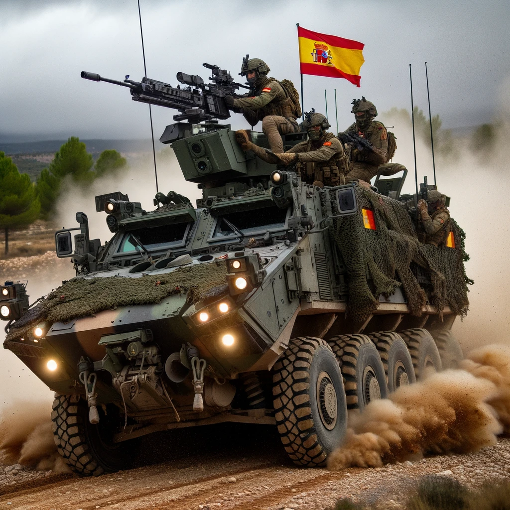

subtitol
El Leopard 2E és una versió del carro de combat alemany Leopard 2A6
adaptat especialment per a l'exèrcit espanyol. A continuació, et
proporcionaré una explicació detallada del Leopard 2E: Origen i
desenvolupament: El Leopard 2E va ser desenvolupat com a resultat d'un
acord entre Alemanya i Espanya en el qual es va establir una
col·laboració per a la producció de carros de combat. Aquest acord va
permetre a Espanya adquirir una versió modificada del Leopard 2A6, que
inclou millors i adaptacions específiques per a les necessitats de
l'exèrcit espanyol. Característiques principals: Blindatge: Aquesta
versió compta amb un blindatge addicional, dissenyat per oferir una
protecció superior contra projectils perforants i dispositius
explosius improvisats. Armament: El Leopard 2E està equipat amb un
canó de 120 mm Rheinmetall L/55, que permet disparar una àmplia
varietat de projectils, inclosos els d'alta penetració. També porta
dues ametralladores, una coaxial de 7,62 mm i una altre antiaèria de
7,62 mm. Sistemes electrònics: Compta amb sistemes avançats de control
de foc i sensors que li permeten operar amb precisió en diferents
condicions, tant de dia com de nit. Mobilitat: Equipat amb un motor de
1.500 CV, el Leopard 2E pot assolir velocitats d'aproximadament 72